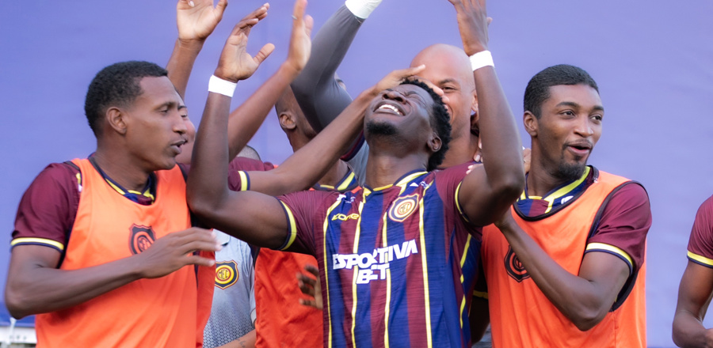

A história do Madureira Esporte Clube sempre esteve ligada ao comércio local. Foi no ano de 1932 que os comerciantes Elísio Alves Ferreira, Manoel Lopes da Silva, Manuel Augusto Maia e Joaquim Braia, entre outros, lideraram um movimento no sentido de ser fundado um grande clube em Madureira. O grupo entrou em contato com Uassir do Amaral, então presidente do Fidalgo Madureira Atlético Clube. Na época, pensou-se ainda na fusão com o Magno Futebol Clube, o que, de início, foi reprovado pelos sócios. Após várias Assembléias, em 16 de fevereiro de 1933 ficou considerado fundado o Madureira Atlético Clube, com a data de 08 de agosto de 1914, que era do Fidalgo. O novo clube passou a adotar em seu emblema e nos uniformes a cor azul do Magno e a roxa do Fidalgo. Em 1939, o Madureira disputou o Campeonato pela Federação Metropolitana de Futebol, sagrando-se campeão no quadro de amadores e campeão nos profissionais do Torneio Início.
Com o objetivo de dinamizar, ampliar e engrandecer atividade esportiva do clube, no dia 12 de outubro 1971 foi criado o Madureira Esporte Clube, resultado da fusão feita com o Madureira Atlético Clube, Madureira Tênis Clube e Imperial Basquete Clube. A data de fundação, no entanto, prevaleceu a de 08 de agosto de 1914, para efeito nas Federações. As cores do clube e seu escudo oficial ficaram semelhante ao do Madureira Atlético Clube. O azul, o amarelo e o grená passaram a formar a bandeira do no time, que passou a ser conhecido como Tricolor Suburbano.
Em 1936, o clube conquista seu primeiro título, o primeiro turno do Campeonato Carioca de 1936. Com isso, o clube jogou a final do campeonato contra o Vasco da Gama, vencendo o primeiro jogo, porém perdendo os dois seguintes, sendo assim vice-campeão.
Em 1937, findou o primeiro turno do campeonato estadual da FMD como segundo lugar. Devido à pacificação da FMD e LCF, o campeonato não foi concluído. Em 3 de setembro de 1937, o extinto Conselho Geral da FMD proclamou o seu campeão (São Cristóvão) e, consequentemente, a definitividade das demais posições. Em 2023, a FERJ reconheceu o campeonato.
Em 2006, o Madureira, comandado por Alfredo Sampaio, sagrou-se vice-campeão carioca da 1º Divisão de profissionais, tendo conquistado ainda nesse campeonato, a Taça Rio, segundo Turno do Campeonato Carioca. O dia 16 de outubro de 2010 entrou para a história do Madureira: pela primeira vez o Tricolor Suburbano conseguiu um acesso num Campeonato Brasileiro. Comandada pelo técnico Antônio Carlos Roy e recheada de jogadores formados em casa, a equipe derrotou o Operário-PR no Estádio Aniceto Moscoso por 6-2 (já havia vencido o primeiro confronto por 4-2), em partida válida pelas quartas-de-finais da Série D do mesmo ano. Com isso, o Madureira passou para as semifinais e obteve, automaticamente, a vaga para disputar a Série C de 2011. Como o América-AM, que eliminou o Madureira nas semifinais, foi penalizado pela CBF por ter escalado um jogador irregularmente, o Tricolor Suburbano herdou o segundo lugar na competição. O vice-campeonato brasileiro da Série D se tornou o maior feito do clube em competições nacionais.